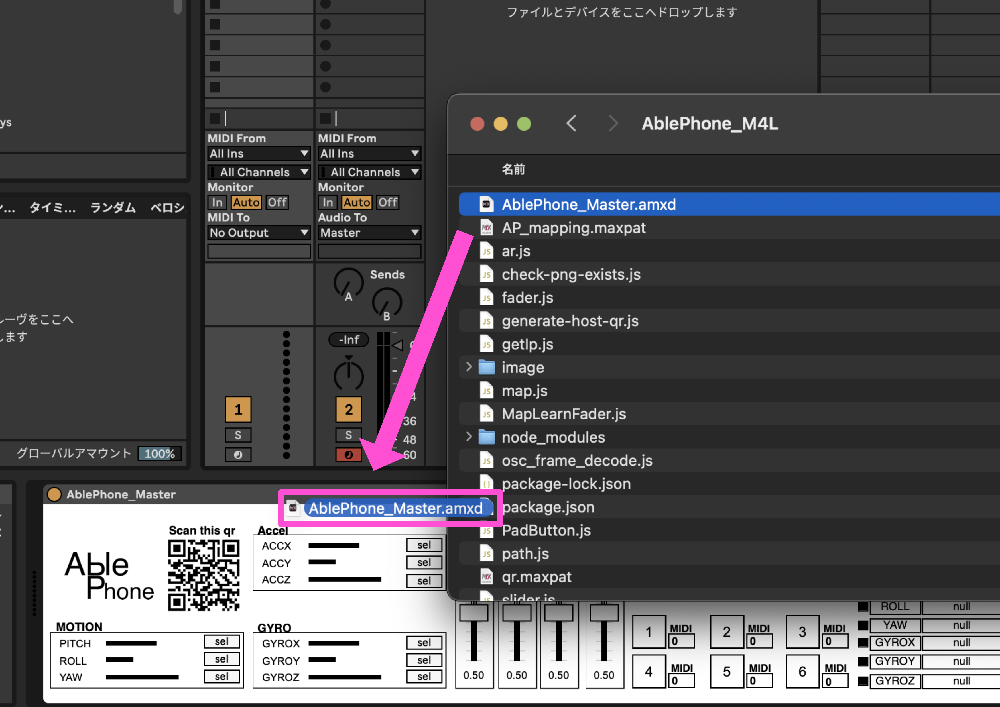
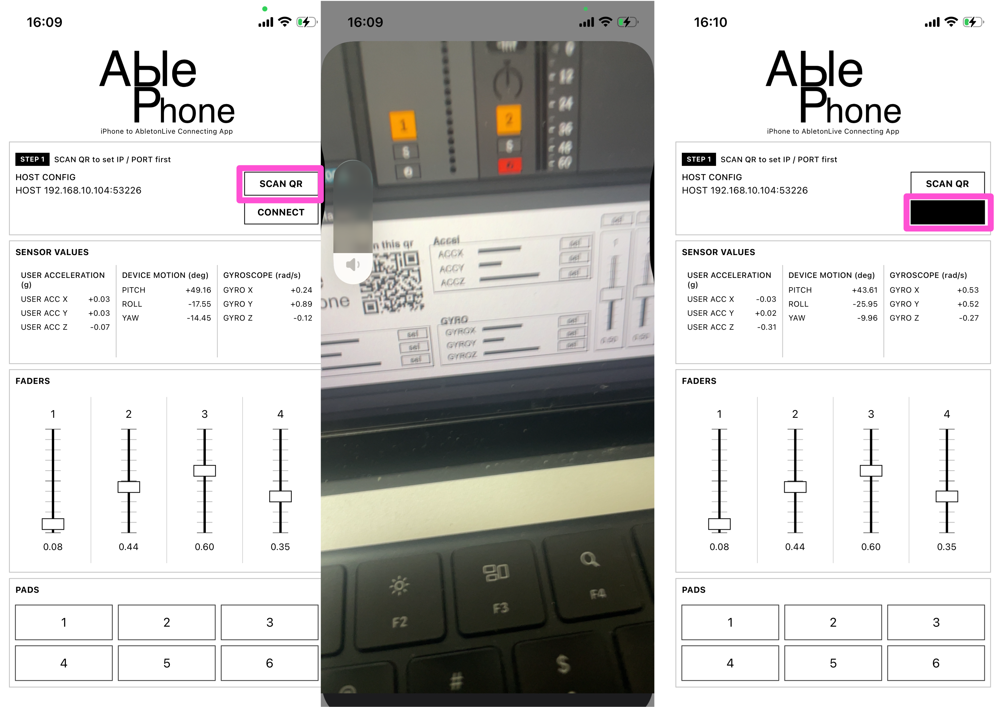
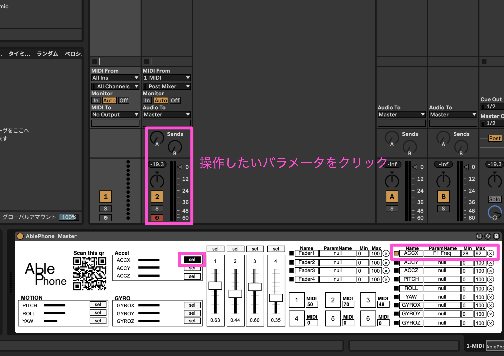
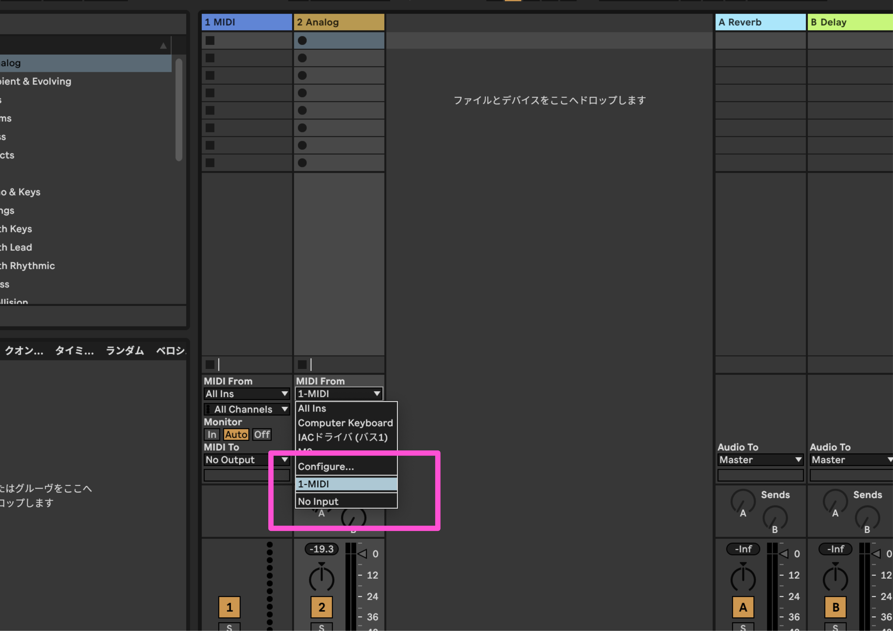
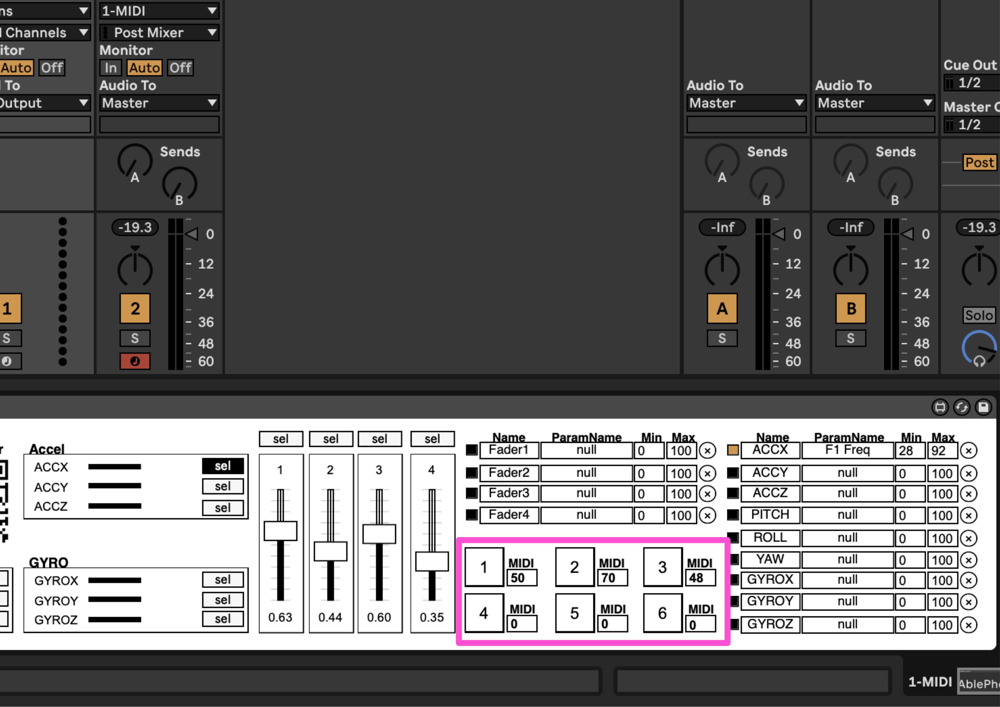

ステップ1: Ableton Live 側の準備
- Ableton Live 上で空の MIDI トラックを作成します。
- ダウンロードした ZIP ファイルを解凍します。
AblePhone_Master.amxdを Ableton Live の MIDI トラックにドラッグ&ドロップします。

はじめて AblePhone を使う方向けの最短セットアップ手順です。画像はあとから差し込めるように、各ステップにプレースホルダーを用意しています。
AblePhone_Master.amxd を Ableton Live の MIDI トラックにドラッグ&ドロップします。
SCAN QR をタップしてカメラを起動し、M4L デバイス上の QR コードを読み取ります。CONNECT ボタンを押して接続します。
set ボタンをクリックして、学習待機状態にします。
MIDI From を、AblePhone_Master.amxd を挿したトラックに設定します。
